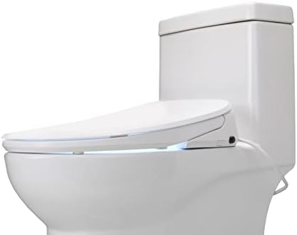
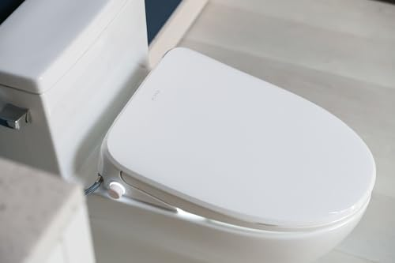
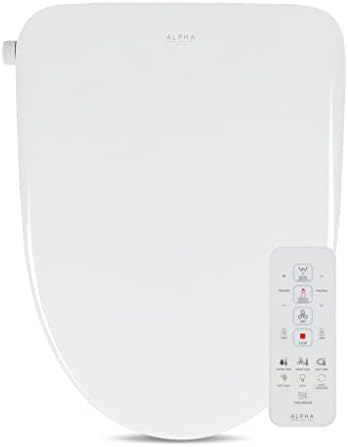
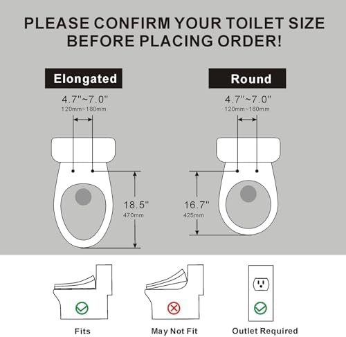
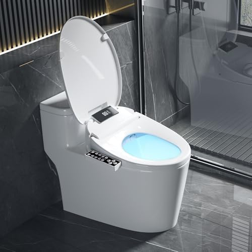
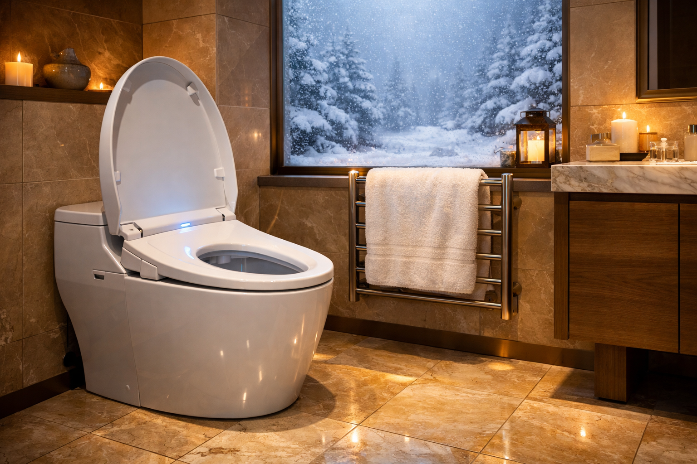
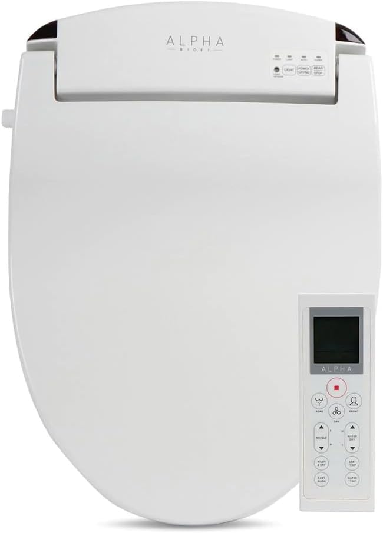
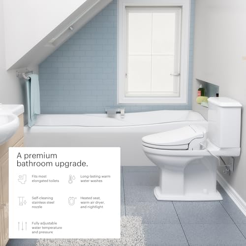
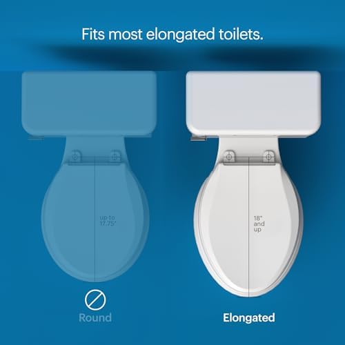

5 Best Heated Toilet Seats for Winter Comfort (2026)

Home & Bathroom Expert | Testing toilet seats and bidets since 2024
This article contains affiliate links. If you purchase through these links, we may earn a small commission at no extra cost to you. Full disclosure.
Quick Answer: Best Heated Toilet Seat?
The ALPHA BIDET UX Pearl
    
 ($449) is our top pick for its premium heated seat, warm water bidet, and whisper-quiet operation. For budget shoppers, the Electric Heated Bidet Seat
($449) is our top pick for its premium heated seat, warm water bidet, and whisper-quiet operation. For budget shoppers, the Electric Heated Bidet Seat


 ($169.99) offers adjustable seat warmth and LED display at the lowest price.
($169.99) offers adjustable seat warmth and LED display at the lowest price.

Nothing ruins a peaceful morning like sitting on an ice-cold toilet seat in winter. It's a universal discomfort that most people accept as inevitable -- but it doesn't have to be.
Heated toilet seats have evolved far beyond simple warmers. Today's models combine seat heating with bidet wash, warm air dryer, deodorizer, and night lights -- transforming your basic toilet into a luxury experience. We analyzed over 8,000 verified reviews across the top heated seats on Amazon to find the 5 that deliver the best warmth, reliability, and value.
Whether you're upgrading from a basic soft-close seat or comparing elongated vs round options, this guide covers everything you need. Already have a bidet? Check our complete bidet seat guide for non-heated options too.
Our picks range from $169.99 to $699.99, with options for every budget and bathroom. All models include adjustable temperature controls and fit standard elongated toilets.

ALPHA BIDET UX Pearl
Premium heated seat + endless warm water bidet. Stainless steel nozzle, wireless remote, eco mode. Whisper-quiet operation.
Check Price on AmazonWhy Get a Heated Toilet Seat?
Heated toilet seats aren't just about comfort -- they offer genuine health and hygiene benefits:
- Eliminate cold-seat shock: Consistent warmth from the moment you sit down, even at 3 AM
- Reduce muscle tension: Warm surfaces help relax pelvic floor muscles, beneficial for those with IBS or constipation
- Bidet hygiene: Most heated seats include warm water wash that's clinically proven to be more hygienic than toilet paper alone
- Save on toilet paper: Bidet function reduces TP usage by up to 75%, saving $100+/year per household
- Energy-efficient: Modern eco modes use just $15-30/year in electricity
According to Mayo Clinic researchers, bidets can help reduce irritation for people with hemorrhoids, sensitive skin, and certain medical conditions.
How We Evaluated These Seats
- Seat Warmth (25%): Temperature range, heat-up speed, and consistency
- Bidet Performance (25%): Water pressure, temperature control, nozzle quality
- Build Quality (20%): Materials, durability, and warranty
- Features (15%): Remote control, night light, dryer, deodorizer
- Installation (15%): DIY-friendliness, required tools, time to install
Top 5 Heated Toilet Seats of 2026
1. ALPHA BIDET UX Pearl Bidet Toilet Seat
Best For: Premium heated seat with full bidet features
Pros
- Instant ceramic heater (no tank)
- Stainless steel self-cleaning nozzle
- Wireless remote control
- Ultra-slim design (5.5" profile)
Cons
- Premium price point
- Elongated only
The ALPHA BIDET UX Pearl is the gold standard for heated bidet seats. Its tankless instant heating system provides endless warm water -- no waiting for a tank to refill. The 3-level heated seat reaches comfort temperature in under 30 seconds, and the eco mode reduces standby power consumption by 70%.
Check Price on Amazon2. LEIVI Electric Bidet Toilet Seat
Best For: Best heated seat under $250
Pros
- Wireless remote included
- Heated seat + warm water + dryer
- Self-cleaning nozzle
- Excellent value
Cons
- Tank-based heating (limited warm water)
- Slightly bulkier design
The LEIVI delivers 90% of premium features at half the price. Its heated seat reaches 3 temperature levels, and the warm water bidet provides comfortable cleansing. The wireless remote makes it easy to adjust settings without reaching behind you.
Check Price on Amazon


3. Brondell Swash SE400 Electric Bidet
Best For: Trusted brand with US-based support
Pros
- Brondell brand quality
- US-based customer support
- Dual stainless nozzles
- Warm air dryer
Cons
- Side panel controls (no remote)
- Slower heat-up time
Brondell is one of the most trusted names in bidet seats in North America. The Swash SE400 offers reliable heated seat technology with dual stainless steel nozzles for front and rear wash. The side-panel controls are intuitive if you prefer not to use a remote.
Check Price on Amazon



4. Electric Heated Bidet Toilet Seat with LED
Best For: Best heated seat under $200
Pros
- Lowest price with heated seat
- LED temperature display
- Warm water wash
- Night light
Cons
- Less established brand
- Smaller water tank
This is the most affordable way to get a genuine heated toilet seat with bidet functionality. The LED display shows exact seat and water temperature, and the built-in night light prevents fumbling in the dark. At under $170, it's hard to beat for a first heated seat experience.
Check Price on Amazon5. ALPHA BIDET JX2 Elongated Bidet Seat
Best For: Endless warm water with tankless design
Pros
- Tankless endless warm water
- LED night light
- Slim modern design
- 2,600+ reviews
Cons
- Higher price vs SE400
- Remote sold separately on some models
The ALPHA JX2 features the same tankless heating technology as our #1 pick but at a lower price point. Its endless warm water system means you'll never run out mid-wash. The LED night light automatically illuminates the bowl in the dark -- a surprisingly useful feature.
Check Price on AmazonComparison Table
| Product | Heating | Bidet | Rating | Price |
|---|---|---|---|---|
| ALPHA UX Pearl | Tankless | Full | 4.5/5 | $449 |
| LEIVI Electric | Tank | Full | 4.5/5 | $240 |
| Brondell SE400 | Tank | Full | 4.2/5 | $280 |
| LED Heated Seat | Tank | Full | 4.4/5 | $170 |
| ALPHA JX2 | Tankless | Full | 4.3/5 | $389 |
Buying Guide: Choosing a Heated Toilet Seat
Tank vs Tankless Heating
- Tank-based ($170-$280): Heats water in a small reservoir. Warm water lasts 30-60 seconds per use. More affordable but limited.
- Tankless ($350-$700): Instant on-demand heating. Endless warm water. Higher upfront cost but better long-term experience.
Essential Features Checklist
- Your toilet shape: elongated or round?
- You have a GFCI outlet within 4 feet of the toilet
- Water supply valve is accessible near the toilet base
- Seat width matches your toilet bowl (measure first!)
- The model includes all necessary adapters and hoses
Temperature Ranges
- Seat heating: Most models offer 3-5 levels (86-104F / 30-40C)
- Water heating: Adjustable from room temp to 104F
- Air dryer: Warm air from 95-140F depending on model
Energy Consumption and Running Costs
One of the most common concerns about heated toilet seats is the electricity cost. In practice, these seats are surprisingly efficient. Tank-based models draw 300-600 watts only during active heating cycles, which typically last 30-60 seconds per use. The rest of the time, the seat maintains warmth using just 30-50 watts -- comparable to a standard LED light bulb. Tankless models like the ALPHA UX Pearl are even more efficient during standby because they only heat water on demand.
Most modern heated seats include an eco or energy-saving mode that learns your bathroom schedule. After a few weeks, the seat reduces heating during hours you rarely use the bathroom (like overnight or during work hours), dropping standby consumption below 1 watt. This feature alone can cut electricity costs by 40-60%. On average, expect to pay $2-3 per month on your electric bill -- less than a single cup of coffee.
Safety Features to Look For
All reputable heated toilet seats include multiple safety mechanisms. A seat sensor detects when someone is sitting and prevents the bidet or dryer from activating when the seat is unoccupied -- this is essential for households with children or pets. The maximum temperature cap (typically 104°F / 40°C for both seat and water) prevents burns, even if controls are set incorrectly. Look for models with auto-shutoff that powers down the heating element after extended inactivity, and anti-scald protection that gradually increases water temperature rather than starting hot. UL certification is a must -- all five picks in this guide are UL-listed, meaning they have passed rigorous electrical safety testing for bathroom use.
Installation: Can You Do It Yourself?
Yes. All 5 seats in this guide are designed for DIY installation. Here's what you'll need:
- Remove your existing toilet seat (2 bolts)
- Mount the bidet mounting plate
- Connect the T-valve to your water supply
- Attach the water hose from T-valve to bidet seat
- Plug into a GFCI electrical outlet
Total time: 30-60 minutes. No plumber needed. For basic seat replacement without bidet, see our toilet seat installation guide.
Frequently Asked Questions
Q: Are heated toilet seats worth it?
Yes. Beyond winter comfort, most heated seats include bidet functions that improve hygiene and save $100+/year on toilet paper. A $300 seat pays for itself in 3 years through TP savings alone.
Q: How much electricity do heated seats use?
$15-30/year with normal use. Most models use 300-600W when heating but have eco modes that reduce standby draw to under 1W. That's less than a nightlight.
Q: Can I install a heated toilet seat myself?
Yes. All models in this guide install in 30-60 minutes with basic tools. You need a GFCI outlet nearby and a water supply valve. No plumber or electrician required (unless you need a new outlet installed).
Q: Do heated seats work with elongated and round toilets?
Most models come in elongated size (the most common in the US). Some brands offer round versions too. Always measure your toilet bowl before ordering.
Q: How long do heated toilet seats last?
Quality models last 5-8 years. The heating element is durable; nozzles and seals may need replacement after 3-5 years. All 5 picks come with at least a 1-year warranty.
Final Verdict
- Best Overall: ALPHA BIDET UX Pearl -- premium tankless heating, endless warm water
- Best Value: LEIVI Electric Bidet Seat -- 90% of premium features at $240
- Best Budget: LED Heated Bidet Seat -- genuine heated seat under $170
If you can stretch your budget, invest in the ALPHA UX Pearl. Its tankless heating system and endless warm water make it the clear winner for daily comfort. But if you're testing the heated seat waters for the first time, the LEIVI at $240 offers incredible value with a lower commitment.
Complete Your Bathroom Upgrade
Our network of expert review sites covers every bathroom essential: